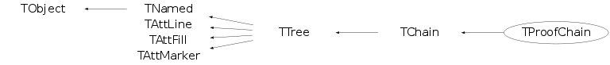

class TProofChain: public TChain
TProofChain A TChain proxy on PROOF. Uses an internal TDSet to handle processing.
Function Members (Methods)
public:
| TProofChain() | |
| TProofChain(TChain* chain, Bool_t gettreeheader) | |
| TProofChain(TDSet* dset, Bool_t gettreeheader) | |
| virtual | ~TProofChain() |
| void | TObject::AbstractMethod(const char* method) const |
| virtual Int_t | TChain::Add(TChain* chain) |
| virtual Int_t | TChain::Add(const char* name, Long64_t nentries = kBigNumber) |
| virtual void | TTree::AddBranchToCache(const char* bname, Bool_t subbranches = kFALSE) |
| virtual void | TTree::AddBranchToCache(TBranch* branch, Bool_t subbranches = kFALSE) |
| virtual Int_t | TChain::AddFile(const char* name, Long64_t nentries = kBigNumber, const char* tname = "") |
| virtual Int_t | TChain::AddFileInfoList(TCollection* list, Long64_t nfiles = kBigNumber) |
| virtual TFriendElement* | TChain::AddFriend(const char* chainname, const char* dummy = "") |
| virtual TFriendElement* | TChain::AddFriend(const char* chainname, TFile* dummy) |
| virtual TFriendElement* | TChain::AddFriend(TTree* chain, const char* alias = "", Bool_t warn = kFALSE) |
| virtual void | TTree::AddTotBytes(Int_t tot) |
| virtual void | TTree::AddZipBytes(Int_t zip) |
| virtual void | TObject::AppendPad(Option_t* option = "") |
| virtual Long64_t | TTree::AutoSave(Option_t* option = "") |
| virtual Int_t | TTree::Branch(TList* list, Int_t bufsize = 32000, Int_t splitlevel = 99) |
| virtual Int_t | TTree::Branch(const char* folder, Int_t bufsize = 32000, Int_t splitlevel = 99) |
| virtual Int_t | TTree::Branch(TCollection* list, Int_t bufsize = 32000, Int_t splitlevel = 99, const char* name = "") |
| virtual TBranch* | TTree::Branch(const char* name, void* address, const char* leaflist, Int_t bufsize = 32000) |
| TBranch* | TTree::Branch(const char* name, char* address, const char* leaflist, Int_t bufsize = 32000) |
| TBranch* | TTree::Branch(const char* name, long address, const char* leaflist, Int_t bufsize = 32000) |
| TBranch* | TTree::Branch(const char* name, int address, const char* leaflist, Int_t bufsize = 32000) |
| TBranch* | TTree::Branch(const char* name, void** obj, Int_t bufsize = 32000, Int_t splitlevel = 99) |
| TBranch* | TTree::Branch(const char* name, const char* classname, void** obj, Int_t bufsize = 32000, Int_t splitlevel = 99) |
| virtual TBranch* | TTree::BranchOld(const char* name, const char* classname, void* addobj, Int_t bufsize = 32000, Int_t splitlevel = 1) |
| virtual TBranch* | TTree::BranchRef() |
| virtual TBranch* | TTree::Bronch(const char* name, const char* classname, void* addobj, Int_t bufsize = 32000, Int_t splitlevel = 99) |
| virtual void | Browse(TBrowser* b) |
| virtual Int_t | TTree::BuildIndex(const char* majorname, const char* minorname = "0") |
| TStreamerInfo* | TTree::BuildStreamerInfo(TClass* cl, void* pointer = 0, Bool_t canOptimize = kTRUE) |
| virtual void | TChain::CanDeleteRefs(Bool_t flag = kTRUE) |
| virtual TFile* | TTree::ChangeFile(TFile* file) |
| static TClass* | Class() |
| virtual const char* | TObject::ClassName() const |
| virtual void | TNamed::Clear(Option_t* option = "") |
| virtual TObject* | TNamed::Clone(const char* newname = "") const |
| virtual TTree* | TTree::CloneTree(Long64_t nentries = -1, Option_t* option = "") |
| virtual Int_t | TNamed::Compare(const TObject* obj) const |
| virtual void | ConnectProof() |
| virtual void | TNamed::Copy(TObject& named) const |
| virtual void | TTree::CopyAddresses(TTree*, Bool_t undo = kFALSE) |
| virtual Long64_t | TTree::CopyEntries(TTree* tree, Long64_t nentries = -1, Option_t* option = "") |
| virtual TTree* | TTree::CopyTree(const char* selection, Option_t* option = "", Long64_t nentries = 1000000000, Long64_t firstentry = 0) |
| virtual TBasket* | TTree::CreateBasket(TBranch*) |
| virtual void | TChain::CreatePackets() |
| Int_t | Debug() const |
| virtual void | TTree::Delete(Option_t* option = "")MENU |
| virtual void | TChain::DirectoryAutoAdd(TDirectory*) |
| Int_t | TAttLine::DistancetoLine(Int_t px, Int_t py, Double_t xp1, Double_t yp1, Double_t xp2, Double_t yp2) |
| virtual Int_t | TObject::DistancetoPrimitive(Int_t px, Int_t py) |
| virtual void | Draw(Option_t* opt) |
| virtual Long64_t | Draw(const char* varexp, const TCut& selection, Option_t* option = "", Long64_t nentries = 1000000000, Long64_t firstentry = 0) |
| virtual Long64_t | Draw(const char* varexp, const char* selection, Option_t* option = "", Long64_t nentries = 1000000000, Long64_t firstentry = 0)MENU |
| virtual void | TObject::DrawClass() constMENU |
| virtual TObject* | TObject::DrawClone(Option_t* option = "") constMENU |
| virtual void | TTree::DropBaskets() |
| virtual void | TTree::DropBranchFromCache(const char* bname, Bool_t subbranches = kFALSE) |
| virtual void | TTree::DropBranchFromCache(TBranch* branch, Bool_t subbranches = kFALSE) |
| virtual void | TTree::DropBuffers(Int_t nbytes) |
| virtual void | TObject::Dump() constMENU |
| virtual void | TObject::Error(const char* method, const char* msgfmt) const |
| virtual void | TObject::Execute(const char* method, const char* params, Int_t* error = 0) |
| virtual void | TObject::Execute(TMethod* method, TObjArray* params, Int_t* error = 0) |
| virtual void | TObject::ExecuteEvent(Int_t event, Int_t px, Int_t py) |
| virtual void | TObject::Fatal(const char* method, const char* msgfmt) const |
| virtual Int_t | TChain::Fill() |
| virtual void | TNamed::FillBuffer(char*& buffer) |
| virtual TBranch* | FindBranch(const char* name) |
| virtual TLeaf* | FindLeaf(const char* name) |
| virtual TObject* | TObject::FindObject(const char* name) const |
| virtual TObject* | TObject::FindObject(const TObject* obj) const |
| virtual Int_t | TTree::Fit(const char* funcname, const char* varexp, const char* selection = "", Option_t* option = "", Option_t* goption = "", Long64_t nentries = 1000000000, Long64_t firstentry = 0)MENU |
| virtual Int_t | TTree::FlushBaskets() const |
| virtual const char* | TChain::GetAlias(const char* aliasName) const |
| virtual Long64_t | TTree::GetAutoFlush() const |
| virtual Long64_t | TTree::GetAutoSave() const |
| virtual TBranch* | GetBranch(const char* name) |
| virtual TBranchRef* | TTree::GetBranchRef() const |
| virtual Bool_t | GetBranchStatus(const char* branchname) const |
| static Int_t | TTree::GetBranchStyle() |
| virtual Long64_t | TTree::GetCacheSize() const |
| virtual Long64_t | TChain::GetChainEntryNumber(Long64_t entry) const |
| virtual Long64_t | TTree::GetChainOffset() const |
| virtual TTree::TClusterIterator | TChain::GetClusterIterator(Long64_t firstentry) |
| TFile* | TTree::GetCurrentFile() const |
| Long64_t | TTree::GetDebugMax() const |
| Long64_t | TTree::GetDebugMin() const |
| Int_t | TTree::GetDefaultEntryOffsetLen() const |
| TDirectory* | TTree::GetDirectory() const |
| virtual Option_t* | TObject::GetDrawOption() const |
| static Long_t | TObject::GetDtorOnly() |
| virtual Long64_t | GetEntries() const |
| virtual Long64_t | GetEntries(const char* sel) |
| virtual Long64_t | TTree::GetEntriesFast() const |
| virtual Long64_t | TTree::GetEntriesFriend() const |
| virtual Int_t | TChain::GetEntry(Long64_t entry = 0, Int_t getall = 0) |
| virtual TEntryList* | TTree::GetEntryList() |
| virtual Long64_t | TChain::GetEntryNumber(Long64_t entry) const |
| virtual Long64_t | TTree::GetEntryNumberWithBestIndex(Int_t major, Int_t minor = 0) const |
| virtual Long64_t | TTree::GetEntryNumberWithIndex(Int_t major, Int_t minor = 0) const |
| virtual Int_t | TChain::GetEntryWithIndex(Int_t major, Int_t minor = 0) |
| virtual Long64_t | TTree::GetEstimate() const |
| Int_t | TTree::GetEvent(Long64_t entry = 0, Int_t getall = 0) |
| TEventList* | TTree::GetEventList() const |
| TFile* | TChain::GetFile() const |
| virtual Int_t | TTree::GetFileNumber() const |
| virtual Color_t | TAttFill::GetFillColor() const |
| virtual Style_t | TAttFill::GetFillStyle() const |
| virtual TTree* | TTree::GetFriend(const char*) const |
| virtual const char* | TTree::GetFriendAlias(TTree*) const |
| TH1* | TTree::GetHistogram() |
| virtual const char* | TObject::GetIconName() const |
| virtual Int_t* | TTree::GetIndex() |
| virtual Double_t* | TTree::GetIndexValues() |
| virtual TIterator* | TTree::GetIteratorOnAllLeaves(Bool_t dir = kIterForward) |
| virtual TLeaf* | TChain::GetLeaf(const char* name) |
| virtual TLeaf* | TChain::GetLeaf(const char* branchname, const char* leafname) |
| virtual Color_t | TAttLine::GetLineColor() const |
| virtual Style_t | TAttLine::GetLineStyle() const |
| virtual Width_t | TAttLine::GetLineWidth() const |
| virtual TList* | GetListOfAliases() const |
| virtual TObjArray* | GetListOfBranches() |
| virtual TList* | GetListOfClones() |
| TObjArray* | TChain::GetListOfFiles() const |
| virtual TList* | GetListOfFriends() const |
| virtual TObjArray* | GetListOfLeaves() |
| Int_t | GetMakeClass() const |
| virtual Color_t | TAttMarker::GetMarkerColor() const |
| virtual Size_t | TAttMarker::GetMarkerSize() const |
| virtual Style_t | TAttMarker::GetMarkerStyle() const |
| virtual Long64_t | TTree::GetMaxEntryLoop() const |
| virtual Double_t | TChain::GetMaximum(const char* columname) |
| static Long64_t | TTree::GetMaxTreeSize() |
| virtual Long64_t | TTree::GetMaxVirtualSize() const |
| virtual Double_t | TChain::GetMinimum(const char* columname) |
| virtual const char* | TNamed::GetName() const |
| virtual Int_t | TChain::GetNbranches() |
| TObject* | TTree::GetNotify() const |
| Int_t | TChain::GetNtrees() const |
| virtual char* | TObject::GetObjectInfo(Int_t px, Int_t py) const |
| static Bool_t | TObject::GetObjectStat() |
| virtual Option_t* | TObject::GetOption() const |
| virtual Int_t | TTree::GetPacketSize() const |
| TVirtualTreePlayer* | GetPlayer() |
| virtual Long64_t | GetReadEntry() const |
| virtual Long64_t | TTree::GetReadEvent() const |
| virtual Int_t | TTree::GetScanField() const |
| TTreeFormula* | TTree::GetSelect() |
| virtual Long64_t | TTree::GetSelectedRows() |
| TList* | TChain::GetStatus() const |
| virtual Int_t | TTree::GetTimerInterval() const |
| virtual const char* | TNamed::GetTitle() const |
| virtual Long64_t | TTree::GetTotBytes() const |
| TBuffer* | TTree::GetTransientBuffer(Int_t size) |
| virtual TTree* | TChain::GetTree() const |
| virtual TVirtualIndex* | TTree::GetTreeIndex() const |
| virtual Int_t | TChain::GetTreeNumber() const |
| Long64_t* | TChain::GetTreeOffset() const |
| Int_t | TChain::GetTreeOffsetLen() const |
| virtual UInt_t | TObject::GetUniqueID() const |
| virtual Int_t | TTree::GetUpdate() const |
| virtual TList* | TTree::GetUserInfo() |
| virtual Double_t* | TTree::GetV1() |
| virtual Double_t* | TTree::GetV2() |
| virtual Double_t* | TTree::GetV3() |
| virtual Double_t* | TTree::GetV4() |
| virtual Double_t* | TTree::GetVal(Int_t i) |
| TTreeFormula* | TTree::GetVar(Int_t i) |
| TTreeFormula* | TTree::GetVar1() |
| TTreeFormula* | TTree::GetVar2() |
| TTreeFormula* | TTree::GetVar3() |
| TTreeFormula* | TTree::GetVar4() |
| virtual Double_t* | TTree::GetW() |
| virtual Double_t | TChain::GetWeight() const |
| virtual Long64_t | TTree::GetZipBytes() const |
| virtual Bool_t | TObject::HandleTimer(TTimer* timer) |
| virtual ULong_t | TNamed::Hash() const |
| Bool_t | HasTreeHeader() const |
| virtual void | TTree::IncrementTotalBuffers(Int_t nbytes) |
| virtual void | TObject::Info(const char* method, const char* msgfmt) const |
| virtual Bool_t | TObject::InheritsFrom(const char* classname) const |
| virtual Bool_t | TObject::InheritsFrom(const TClass* cl) const |
| virtual void | TObject::Inspect() constMENU |
| void | TObject::InvertBit(UInt_t f) |
| virtual TClass* | IsA() const |
| virtual Bool_t | TObject::IsEqual(const TObject* obj) const |
| virtual Bool_t | TTree::IsFolder() const |
| Bool_t | TObject::IsOnHeap() const |
| virtual Bool_t | TNamed::IsSortable() const |
| virtual Bool_t | TAttFill::IsTransparent() const |
| Bool_t | TObject::IsZombie() const |
| virtual Int_t | TChain::LoadBaskets(Long64_t maxmemory) |
| virtual Long64_t | TChain::LoadTree(Long64_t entry) |
| virtual Long64_t | TTree::LoadTreeFriend(Long64_t entry, TTree* T) |
| void | TChain::Lookup(Bool_t force = kFALSE) |
| virtual void | TChain::Loop(Option_t* option = "", Long64_t nentries = kBigNumber, Long64_t firstentry = 0)MENU |
| virtual void | TChain::ls(Option_t* option = "") const |
| virtual Int_t | TTree::MakeClass(const char* classname = 0, Option_t* option = "") |
| virtual Int_t | TTree::MakeCode(const char* filename = 0) |
| virtual Int_t | TTree::MakeProxy(const char* classname, const char* macrofilename = 0, const char* cutfilename = 0, const char* option = 0, Int_t maxUnrolling = 3) |
| virtual Int_t | TTree::MakeSelector(const char* selector = 0) |
| void | TObject::MayNotUse(const char* method) const |
| Bool_t | TTree::MemoryFull(Int_t nbytes) |
| virtual Long64_t | TChain::Merge(const char* name, Option_t* option = "") |
| virtual Long64_t | TChain::Merge(TCollection* list, Option_t* option = "") |
| virtual Long64_t | TChain::Merge(TCollection* list, TFileMergeInfo* info) |
| virtual Long64_t | TChain::Merge(TFile* file, Int_t basketsize, Option_t* option = "") |
| static TTree* | TTree::MergeTrees(TList* list, Option_t* option = "") |
| virtual void | TAttLine::Modify() |
| virtual Bool_t | TTree::Notify() |
| void | TObject::Obsolete(const char* method, const char* asOfVers, const char* removedFromVers) const |
| static void | TObject::operator delete(void* ptr) |
| static void | TObject::operator delete(void* ptr, void* vp) |
| static void | TObject::operator delete[](void* ptr) |
| static void | TObject::operator delete[](void* ptr, void* vp) |
| void* | TObject::operator new(size_t sz) |
| void* | TObject::operator new(size_t sz, void* vp) |
| void* | TObject::operator new[](size_t sz) |
| void* | TObject::operator new[](size_t sz, void* vp) |
| TNamed& | TNamed::operator=(const TNamed& rhs) |
| virtual void | TTree::OptimizeBaskets(ULong64_t maxMemory = 10000000, Float_t minComp = 1.1, Option_t* option = "") |
| virtual void | TObject::Paint(Option_t* option = "") |
| virtual void | TObject::Pop() |
| TPrincipal* | TTree::Principal(const char* varexp = "", const char* selection = "", Option_t* option = "np", Long64_t nentries = 1000000000, Long64_t firstentry = 0) |
| virtual void | TChain::Print(Option_t* option = "") const |
| virtual void | TTree::PrintCacheStats(Option_t* option = "") const |
| virtual Long64_t | Process(const char* filename, Option_t* option = "", Long64_t nentries = 1000000000, Long64_t firstentry = 0)MENU |
| virtual Long64_t | Process(TSelector* selector, Option_t* option = "", Long64_t nentries = 1000000000, Long64_t firstentry = 0) |
| virtual void | Progress(Long64_t total, Long64_t processed) |
| virtual Long64_t | TTree::Project(const char* hname, const char* varexp, const char* selection = "", Option_t* option = "", Long64_t nentries = 1000000000, Long64_t firstentry = 0) |
| virtual TSQLResult* | TTree::Query(const char* varexp = "", const char* selection = "", Option_t* option = "", Long64_t nentries = 1000000000, Long64_t firstentry = 0) |
| virtual Int_t | TObject::Read(const char* name) |
| virtual Long64_t | TTree::ReadFile(const char* filename, const char* branchDescriptor = "", char delimiter = ' ') |
| virtual Long64_t | TTree::ReadStream(istream& inputStream, const char* branchDescriptor = "", char delimiter = ' ') |
| virtual void | TChain::RecursiveRemove(TObject* obj) |
| virtual void | TTree::Refresh() |
| virtual void | ReleaseProof() |
| virtual void | TTree::RemoveFriend(TTree*) |
| virtual void | TChain::Reset(Option_t* option = "") |
| virtual void | TChain::ResetAfterMerge(TFileMergeInfo*) |
| virtual void | TAttFill::ResetAttFill(Option_t* option = "") |
| virtual void | TAttLine::ResetAttLine(Option_t* option = "") |
| virtual void | TAttMarker::ResetAttMarker(Option_t* toption = "") |
| void | TObject::ResetBit(UInt_t f) |
| virtual void | TChain::ResetBranchAddress(TBranch*) |
| virtual void | TChain::ResetBranchAddresses() |
| virtual void | TObject::SaveAs(const char* filename = "", Option_t* option = "") constMENU |
| virtual void | TAttFill::SaveFillAttributes(ostream& out, const char* name, Int_t coldef = 1, Int_t stydef = 1001) |
| virtual void | TAttLine::SaveLineAttributes(ostream& out, const char* name, Int_t coldef = 1, Int_t stydef = 1, Int_t widdef = 1) |
| virtual void | TAttMarker::SaveMarkerAttributes(ostream& out, const char* name, Int_t coldef = 1, Int_t stydef = 1, Int_t sizdef = 1) |
| virtual void | TObject::SavePrimitive(ostream& out, Option_t* option = "") |
| virtual Long64_t | TChain::Scan(const char* varexp = "", const char* selection = "", Option_t* option = "", Long64_t nentries = 1000000000, Long64_t firstentry = 0)MENU |
| virtual Bool_t | TTree::SetAlias(const char* aliasName, const char* aliasFormula) |
| virtual void | TChain::SetAutoDelete(Bool_t autodel = kTRUE) |
| virtual void | TTree::SetAutoFlush(Long64_t autof = 30000000) |
| virtual void | TTree::SetAutoSave(Long64_t autos = 300000000) |
| virtual void | TTree::SetBasketSize(const char* bname, Int_t buffsize = 16000) |
| void | TObject::SetBit(UInt_t f) |
| void | TObject::SetBit(UInt_t f, Bool_t set) |
| virtual Int_t | TChain::SetBranchAddress(const char* bname, void* add, TBranch** ptr = 0) |
| virtual Int_t | TChain::SetBranchAddress(const char* bname, void* add, TClass* realClass, EDataType datatype, Bool_t isptr) |
| virtual Int_t | TChain::SetBranchAddress(const char* bname, void* add, TBranch** ptr, TClass* realClass, EDataType datatype, Bool_t isptr) |
| virtual void | TChain::SetBranchStatus(const char* bname, Bool_t status = 1, UInt_t* found = 0) |
| static void | TTree::SetBranchStyle(Int_t style = 1) |
| virtual void | TTree::SetCacheEntryRange(Long64_t first, Long64_t last) |
| virtual void | TTree::SetCacheLearnEntries(Int_t n = 10) |
| virtual void | TTree::SetCacheSize(Long64_t cachesize = -1) |
| virtual void | TTree::SetChainOffset(Long64_t offset = 0) |
| virtual void | TTree::SetCircular(Long64_t maxEntries) |
| virtual void | SetDebug(Int_t level = 1, Long64_t min = 0, Long64_t max = 9999999)MENU |
| virtual void | TTree::SetDefaultEntryOffsetLen(Int_t newdefault, Bool_t updateExisting = kFALSE) |
| virtual void | TChain::SetDirectory(TDirectory* dir) |
| virtual void | TObject::SetDrawOption(Option_t* option = "")MENU |
| static void | TObject::SetDtorOnly(void* obj) |
| virtual Long64_t | TTree::SetEntries(Long64_t n = -1) |
| virtual void | SetEntryList(TEntryList* enlist, Option_t*) |
| virtual void | TChain::SetEntryListFile(const char* filename = "", Option_t* opt = "") |
| virtual void | TTree::SetEstimate(Long64_t nentries = 10000) |
| virtual void | SetEventList(TEventList* evlist) |
| virtual void | TTree::SetFileNumber(Int_t number = 0) |
| virtual void | TAttFill::SetFillAttributes()MENU |
| virtual void | TAttFill::SetFillColor(Color_t fcolor) |
| virtual void | TAttFill::SetFillStyle(Style_t fstyle) |
| virtual void | TAttLine::SetLineAttributes()MENU |
| virtual void | TAttLine::SetLineColor(Color_t lcolor) |
| virtual void | TAttLine::SetLineStyle(Style_t lstyle) |
| virtual void | TAttLine::SetLineWidth(Width_t lwidth) |
| virtual void | TChain::SetMakeClass(Int_t make) |
| virtual void | TAttMarker::SetMarkerAttributes()MENU |
| virtual void | TAttMarker::SetMarkerColor(Color_t tcolor = 1) |
| virtual void | TAttMarker::SetMarkerSize(Size_t msize = 1) |
| virtual void | TAttMarker::SetMarkerStyle(Style_t mstyle = 1) |
| virtual void | TTree::SetMaxEntryLoop(Long64_t maxev = 1000000000)MENU |
| static void | TTree::SetMaxTreeSize(Long64_t maxsize = 1900000000) |
| virtual void | TTree::SetMaxVirtualSize(Long64_t size = 0)MENU |
| virtual void | SetName(const char* name)MENU |
| virtual void | TNamed::SetNameTitle(const char* name, const char* title) |
| virtual void | TTree::SetNotify(TObject* obj) |
| virtual void | TTree::SetObject(const char* name, const char* title) |
| static void | TObject::SetObjectStat(Bool_t stat) |
| virtual void | TChain::SetPacketSize(Int_t size = 100) |
| virtual void | TTree::SetParallelUnzip(Bool_t opt = kTRUE, Float_t RelSize = -1) |
| virtual void | TChain::SetProof(Bool_t on = kTRUE, Bool_t refresh = kFALSE, Bool_t gettreeheader = kFALSE) |
| virtual void | TTree::SetScanField(Int_t n = 50)MENU |
| virtual void | TTree::SetTimerInterval(Int_t msec = 333) |
| virtual void | TNamed::SetTitle(const char* title = "")MENU |
| virtual void | TTree::SetTreeIndex(TVirtualIndex* index) |
| virtual void | TObject::SetUniqueID(UInt_t uid) |
| virtual void | TTree::SetUpdate(Int_t freq = 0) |
| virtual void | TChain::SetWeight(Double_t w = 1, Option_t* option = "") |
| virtual void | TTree::Show(Long64_t entry = -1, Int_t lenmax = 20) |
| virtual void | ShowMembers(TMemberInspector& insp) |
| virtual Int_t | TNamed::Sizeof() const |
| virtual void | TTree::StartViewer()MENU |
| virtual void | TTree::StopCacheLearningPhase() |
| virtual void | Streamer(TBuffer& b) |
| void | StreamerNVirtual(TBuffer& b) |
| virtual void | TObject::SysError(const char* method, const char* msgfmt) const |
| Bool_t | TObject::TestBit(UInt_t f) const |
| Int_t | TObject::TestBits(UInt_t f) const |
| virtual Int_t | TTree::UnbinnedFit(const char* funcname, const char* varexp, const char* selection = "", Option_t* option = "", Long64_t nentries = 1000000000, Long64_t firstentry = 0) |
| virtual void | TChain::UseCache(Int_t maxCacheSize = 10, Int_t pageSize = 0) |
| virtual void | TTree::UseCurrentStyle() |
| virtual void | TObject::Warning(const char* method, const char* msgfmt) const |
| virtual Int_t | TTree::Write(const char* name = 0, Int_t option = 0, Int_t bufsize = 0) |
| virtual Int_t | TTree::Write(const char* name = 0, Int_t option = 0, Int_t bufsize = 0) const |
protected:
| void | TTree::AddClone(TTree*) |
| virtual TBranch* | TTree::BranchImp(const char* branchname, TClass* ptrClass, void* addobj, Int_t bufsize, Int_t splitlevel) |
| virtual TBranch* | TTree::BranchImp(const char* branchname, const char* classname, TClass* ptrClass, void* addobj, Int_t bufsize, Int_t splitlevel) |
| virtual TBranch* | TTree::BranchImpRef(const char* branchname, const char* classname, TClass* ptrClass, void* addobj, Int_t bufsize, Int_t splitlevel) |
| virtual TBranch* | TTree::BranchImpRef(const char* branchname, TClass* ptrClass, EDataType datatype, void* addobj, Int_t bufsize, Int_t splitlevel) |
| virtual TBranch* | TTree::BronchExec(const char* name, const char* classname, void* addobj, Bool_t isptrptr, Int_t bufsize, Int_t splitlevel) |
| virtual Int_t | TTree::CheckBranchAddressType(TBranch* branch, TClass* ptrClass, EDataType datatype, Bool_t ptr) |
| virtual void | TObject::DoError(int level, const char* location, const char* fmt, va_list va) const |
| virtual TLeaf* | TTree::GetLeafImpl(const char* branchname, const char* leafname) |
| char | TTree::GetNewlineValue(istream& inputStream) |
| void | TTree::ImportClusterRanges(TTree* fromtree) |
| virtual void | TTree::KeepCircular() |
| void | TObject::MakeZombie() |
| void | TChain::ReleaseChainProof() |
| Int_t | TTree::SetBranchAddressImp(TBranch* branch, void* addr, TBranch** ptr) |
private:
| void | FillDrawAttributes(TProof* p) |
Data Members
public:
| enum { | kOwnsChain | |
| }; | ||
| enum TChain::[unnamed] { | kGlobalWeight | |
| kAutoDelete | ||
| kProofUptodate | ||
| kProofLite | ||
| kBigNumber | ||
| }; | ||
| enum TTree::ELockStatusBits { | kFindBranch | |
| kFindLeaf | ||
| kGetAlias | ||
| kGetBranch | ||
| kGetEntry | ||
| kGetEntryWithIndex | ||
| kGetFriend | ||
| kGetFriendAlias | ||
| kGetLeaf | ||
| kLoadTree | ||
| kPrint | ||
| kRemoveFriend | ||
| kSetBranchStatus | ||
| }; | ||
| enum TTree::SetBranchAddressStatus { | kMissingBranch | |
| kInternalError | ||
| kMissingCompiledCollectionProxy | ||
| kMismatch | ||
| kClassMismatch | ||
| kMatch | ||
| kMatchConversion | ||
| kMatchConversionCollection | ||
| kMakeClass | ||
| kVoidPtr | ||
| kNoCheck | ||
| }; | ||
| enum TTree::[unnamed] { | kForceRead | |
| kCircular | ||
| kSplitCollectionOfPointers | ||
| }; | ||
| enum TObject::EStatusBits { | kCanDelete | |
| kMustCleanup | ||
| kObjInCanvas | ||
| kIsReferenced | ||
| kHasUUID | ||
| kCannotPick | ||
| kNoContextMenu | ||
| kInvalidObject | ||
| }; | ||
| enum TObject::[unnamed] { | kIsOnHeap | |
| kNotDeleted | ||
| kZombie | ||
| kBitMask | ||
| kSingleKey | ||
| kOverwrite | ||
| kWriteDelete | ||
| }; |
protected:
| TList* | TTree::fAliases | List of aliases for expressions based on the tree branches. |
| Long64_t | TTree::fAutoFlush | Autoflush tree when fAutoFlush entries written |
| Long64_t | TTree::fAutoSave | Autosave tree when fAutoSave bytes produced |
| TBranchRef* | TTree::fBranchRef | Branch supporting the TRefTable (if any) |
| TObjArray | TTree::fBranches | List of Branches |
| Long64_t | TTree::fCacheSize | ! Maximum size of file buffers |
| Bool_t | TChain::fCanDeleteRefs | ! If true, TProcessIDs are deleted when closing a file |
| TChain* | fChain | mother chain: needed for the browsing list |
| Long64_t | TTree::fChainOffset | ! Offset of 1st entry of this Tree in a TChain |
| TList* | TTree::fClones | ! List of cloned trees which share our addresses |
| Long64_t* | TTree::fClusterRangeEnd | [fNClusterRange] Last entry of a cluster range. |
| Long64_t* | TTree::fClusterSize | [fNClusterRange] Number of entries in each cluster for a given range. |
| Int_t | TTree::fDebug | ! Debug level |
| Long64_t | TTree::fDebugMax | ! Last entry number to debug |
| Long64_t | TTree::fDebugMin | ! First entry number to debug |
| Int_t | TTree::fDefaultEntryOffsetLen | Initial Length of fEntryOffset table in the basket buffers |
| TDirectory* | TTree::fDirectory | ! Pointer to directory holding this tree |
| TDrawFeedback* | fDrawFeedback | feedback handler |
| Long64_t | TTree::fEntries | Number of entries |
| TEntryList* | TTree::fEntryList | ! Pointer to event selection list (if one) |
| Long64_t | TTree::fEstimate | Number of entries to estimate histogram limits |
| TEventList* | TTree::fEventList | ! Pointer to event selection list (if one) |
| TFile* | TChain::fFile | ! Pointer to current file (We own the file). |
| Int_t | TTree::fFileNumber | ! current file number (if file extensions) |
| TObjArray* | TChain::fFiles | -> List of file names containing the trees (TChainElement, owned) |
| Color_t | TAttFill::fFillColor | fill area color |
| Style_t | TAttFill::fFillStyle | fill area style |
| Long64_t | TTree::fFlushedBytes | Number of autoflushed bytes |
| UInt_t | TTree::fFriendLockStatus | ! Record which method is locking the friend recursion |
| TList* | TTree::fFriends | pointer to list of friend elements |
| TArrayI | TTree::fIndex | Index of sorted values |
| TArrayD | TTree::fIndexValues | Sorted index values |
| TObjArray | TTree::fLeaves | Direct pointers to individual branch leaves |
| Color_t | TAttLine::fLineColor | line color |
| Style_t | TAttLine::fLineStyle | line style |
| Width_t | TAttLine::fLineWidth | line width |
| Int_t | TTree::fMakeClass | ! not zero when processing code generated by MakeClass |
| Color_t | TAttMarker::fMarkerColor | Marker color index |
| Size_t | TAttMarker::fMarkerSize | Marker size |
| Style_t | TAttMarker::fMarkerStyle | Marker style |
| Int_t | TTree::fMaxClusterRange | ! Memory allocated for the cluster range. |
| Long64_t | TTree::fMaxEntries | Maximum number of entries in case of circular buffers |
| Long64_t | TTree::fMaxEntryLoop | Maximum number of entries to process |
| Long64_t | TTree::fMaxVirtualSize | Maximum total size of buffers kept in memory |
| Int_t | TTree::fNClusterRange | Number of Cluster range in addition to the one defined by 'AutoFlush' |
| TString | TNamed::fName | object identifier |
| Int_t | TTree::fNfill | ! Local for EntryLoop |
| TObject* | TTree::fNotify | ! Object to be notified when loading a Tree |
| Int_t | TChain::fNtrees | Number of trees |
| Int_t | TTree::fPacketSize | ! Number of entries in one packet for parallel root |
| TVirtualTreePlayer* | TTree::fPlayer | ! Pointer to current Tree player |
| TChain* | TChain::fProofChain | ! chain proxy when going to be processed by PROOF |
| Long64_t | TTree::fReadEntry | ! Number of the entry being processed |
| Long64_t | TTree::fSavedBytes | Number of autosaved bytes |
| Int_t | TTree::fScanField | Number of runs before prompting in Scan |
| TDSet* | fSet | TDSet |
| TList* | TChain::fStatus | -> List of active/inactive branches (TChainElement, owned) |
| Int_t | TTree::fTimerInterval | Timer interval in milliseconds |
| TString | TNamed::fTitle | object title |
| Long64_t | TTree::fTotBytes | Total number of bytes in all branches before compression |
| Long64_t | TTree::fTotalBuffers | ! Total number of bytes in branch buffers |
| TBuffer* | TTree::fTransientBuffer | ! Pointer to the current transient buffer. |
| TTree* | TChain::fTree | ! Pointer to current tree (Note: We do *not* own this tree.) |
| TVirtualIndex* | TTree::fTreeIndex | Pointer to the tree Index (if any) |
| Int_t | TChain::fTreeNumber | ! Current Tree number in fTreeOffset table |
| Long64_t* | TChain::fTreeOffset | [fTreeOffsetLen] Array of variables |
| Int_t | TChain::fTreeOffsetLen | Current size of fTreeOffset array |
| Int_t | TTree::fUpdate | Update frequency for EntryLoop |
| TList* | TTree::fUserInfo | pointer to a list of user objects associated to this Tree |
| Double_t | TTree::fWeight | Tree weight (see TTree::SetWeight) |
| Long64_t | TTree::fZipBytes | Total number of bytes in all branches after compression |
| static Int_t | TTree::fgBranchStyle | Old/New branch style |
| static Long64_t | TTree::fgMaxTreeSize | Maximum size of a file containg a Tree |
Class Charts
{kind=link}
{kind=link}
{kind=link}
{kind=link}

Function documentation
TProofChain(TChain* chain, Bool_t gettreeheader)
Crates a new PROOF chain proxy containing the files from the chain.
TProofChain(TDSet* dset, Bool_t gettreeheader)
Creates a new PROOF chain proxy containing the files from the dset.
Long64_t Draw(const char* varexp, const TCut& selection, Option_t* option = "", Long64_t nentries = 1000000000, Long64_t firstentry = 0)
Long64_t Draw(const char* varexp, const char* selection, Option_t* option = "", Long64_t nentries = 1000000000, Long64_t firstentry = 0)
void FillDrawAttributes(TProof* p)
Communicate the drawing attributes for this chain to the input list
so that the draw selectors can use them, in case of need.
The drawing attributes are:
LineColor Line color
LineStyle Line style
LineWidth Line width
MarkerColor Marker color index
MarkerSize Marker size
MarkerStyle Marker style
FillColor Area fill color
FillStyle Area fill style
TBranch * FindBranch(const char* name)
Forwards the execution to the dummy tree header. See TTree::FindBranch().
Bool_t GetBranchStatus(const char* branchname) const
Forwards the execution to the dummy tree header. See TTree::GetBranchStatus().
Long64_t Process(const char* filename, Option_t* option = "", Long64_t nentries = 1000000000, Long64_t firstentry = 0)
Long64_t Process(TSelector* selector, Option_t* option = "", Long64_t nentries = 1000000000, Long64_t firstentry = 0)
Not implemented in TProofChain. Shouldn't be used. The return value is -1 in case of error and TSelector::GetStatus() in in case of success.
Long64_t GetEntries() const
Returns the total number of entries in the TProofChain, which is the number of entries in the TDSet that it holds.
Long64_t GetEntries(const char* sel)
See TTree::GetEntries(const char *selection) Not implemented in TProofChain. Shouldn't be used.
void ConnectProof()
Connects the proof - creates a "DrawFeedback" and connects the "Progress" signal.
Long64_t Draw(const char* varexp, const TCut& selection, Option_t* option = "", Long64_t nentries = 1000000000, Long64_t firstentry = 0)
Int_t GetMakeClass() const
GetMakeClass is left non-virtual for efficiency reason. Making it virtual affects the performance of the I/O
{return fMakeClass;}